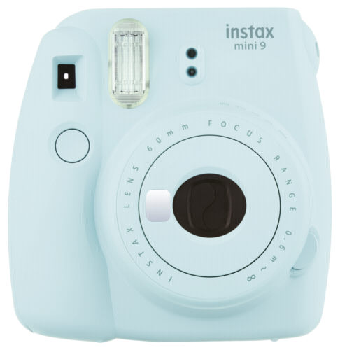

Fotografía


Tecnología
Cámaras instantáneas
Se les llama cámaras instantáneas a cuyas cámaras revelan la foto al instante en el que se saca, por ejemplo, las polaroid, se pusieron muy de moda en los 80.
Instax Mini 9 Fujifilm
Tamaño de la foto 62mmx46mm, salida automática de la foto, alimentada con 2 pilas AA, pesa unos 307g, capacidad de 100 fotos por cada 2 pilas nuevas. Precio unos 65€.
Kodak Mini Shot Instant
Cuesta alrededor de los 110€, 10 megapíxeles, pantalla LCD de 1,7 pulgadas, autofoco, balance de blancos y correcto de gama,
tamaño de las fotos de 2,1x3,4 pulgadas (tamaño de tarjeta de crédito), resistente al agua, bluetooth,
posibilidad de app móvil para aplicar filtros y efectos a las fotos.
Polaroid OneStep 2 Viewfinder
Inspirada en la mítica versión del 77, compatible con la película Polaroid i-Type (también la usa la Polaroid 600),
potente flash, batería recargable, 2h para la carga total dan para hacer entre 120 y 160 fotos,
objetivo de alta calidad, temporizador, palanca para compensar la exposición y
obtener fotos un poco más claras u oscuras, cuesta unos 120€
(a parte el papel, como en las anteriores cámaras de esta sección), hace las típicas fotos en papel blanco con un espacio abajo para poder escribir.